Basic Facilities
Gangasagar is the largest congregation in eastern India where people visit with a belief that a dip into the holy waters can destroy sins. This belief pours millions of pilgrims every year on the banks of Gangasagar. Prioritizing health care, safety, security, and basic needs of this crowd, the administration is diligent in providing the basic facilities.
Pilgrim's Services
Find essential services near you
Facilities for Pilgrims
Ensuring a safe, comfortable and convenient pilgrimage experience
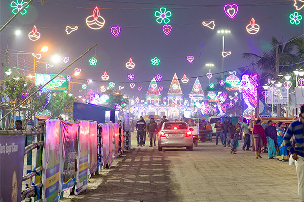
Adequate Light at Night
Gangasagar can only become a home away from home for the pilgrims when their safety will be looked after. In a large congregation, women, seniors, and children fall prey to the predators. Thus, properly illuminated lights will be up all night, ensuring no dangers for the visitors.
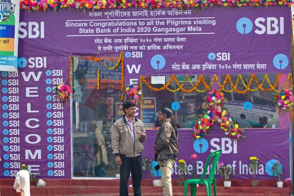
ATM Facilities
Preparing it for Gangasagar 2023 is like a herculean task, especially when its accessibility is far-fetched from the mainland. In cases like these, emergency needs are quite difficult to serve. So, ATMs are being installed in the mela province to cope with crisis situations.
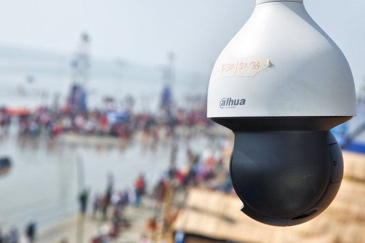
24/7 CCTV Monitoring
Making the largest congregation of faith a peaceful one requires constant monitoring inside the mela province. Keeping the safety of pilgrims in the first place, the entire area is kept under the surveillance of 1150 CCTV cameras.
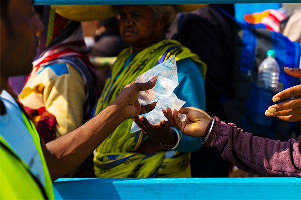
Drinking Water
Pure drinking water is one of the primary needs of humans existing on earth. Polluted water has been the carrier of various disease outbreaks and water-borne sicknesses. Thus, the consumption of quality drinking water was kept in check at every step. Around 50 lakh water pouches will be distributed in mela province.
Water Divers
About 2100 Civil Defence Volunteers and Deep Divers, will be deployed for disaster response. 10 temporary fire stations with 25 fire tenders will be placed at strategic locations. Accidental Insurance Coverage for pilgrims, Govt. Officials, Police, NGO, Transport, and Media personnel of Rs.5 lakh per person will be provided from 8th to 17th January 2023.
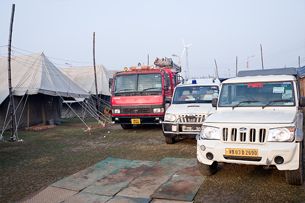
Emergency Fire Evacuation Services
In a fair of devotion like Gangasagar, millions of people flood out to be a part of moksha. In such instances, unfortunate events can occur anytime. Thus, the team is always kept ready to combat occurrences. 10 temporary fire stations with 25 fire tenders will be placed
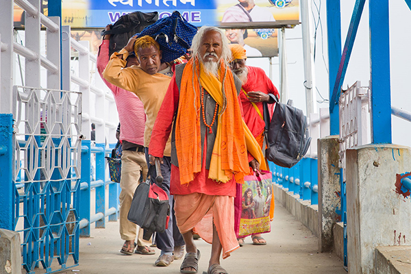
Guided Pathway
Being overcrowded, getting stamped and run over by pilgrims is always a possibility in eastern India’s largest congregation, Gangasagar. To avoid any mishap, the entire pathway for the journey to moksha has been under fencing and guided throughout.
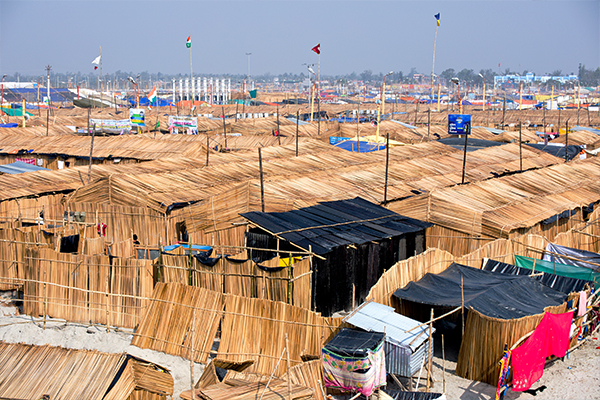
Hogla Huts
In between the pursuit of moksha and the quest for the divine, lies the devotion to our earth. The district administration in their efforts erects thousands of Hogla cottages to provide solace and reduce the ecological footprints.
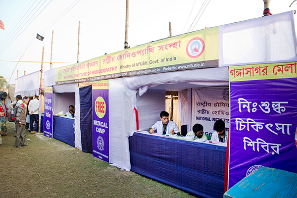
Emergency Medical Facilities
Making the second largest act of faith a success story requires exquisite arrangement and planning. Among these, healthcare is one of the seamless facilities. Air ambulance, a medically equipped helicopter will become a grand solution for the pilgrims
Medical Camp
In the land of Gangasagar, where millions, especially the seniors are visiting in the pursuit of moksha, health care remains an evergreen concern. Keeping this as the most pressing matter, the administration created a 24/7 intensive care unit. A total of 300 bedded health facilities will around Sagar and
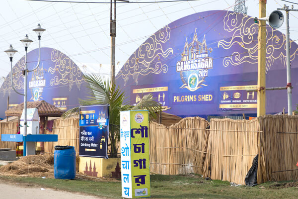
Pilgrims Sheds
“Guest is God”, India goes by this belief. Pilgrims are the guests at Gangasagar. Providing them with a safe shelter to live in is the duty of the host. So, the district administration erected various pilgrim sheds to relieve the exhaustion that pilgrims have to bear in the pursuit of moksha.
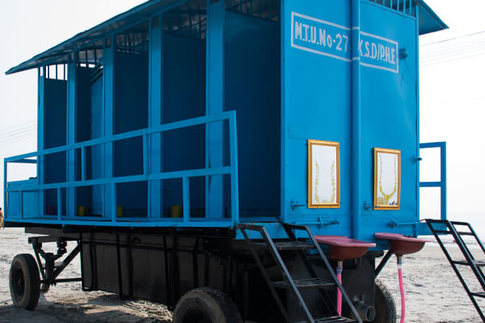
Public Toilets
The Health and safety of the pilgrims are the top priority for the district administration while organizing the Gangasagar mela. 10000 public toilets both temporary and permanent are built for pilgrims who visit the mela during Makar Sankranti. 7 Solid Waste Management Units
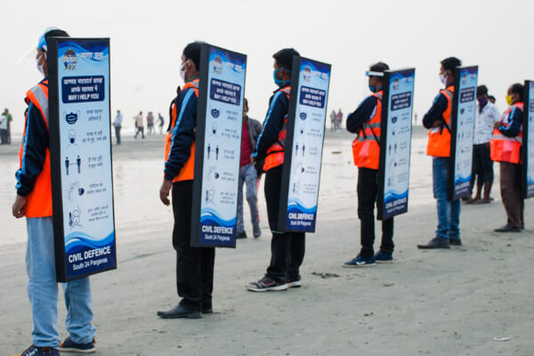
Sagar Bandhu for Assistance
‘A friend in need is a friend indeed’ these lines come true even at Gangasagar when you meet ‘Sagar Bandhu’. He is an associate who will help pilgrims whenever in need. This year too, Sagar Bandhu will guide people about the probable mishaps while providing the necessary protection to fight against them.
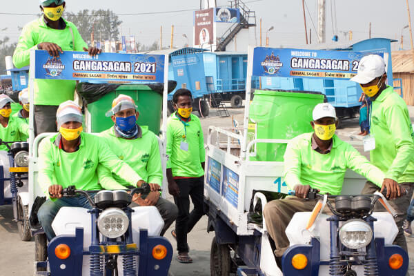
Sanitation Team for Maintaining Hygiene
Keeping the entire mela ground clean and sanitized was the biggest responsibility of the administration in 2023. Around 10000 toilets, along with 3000 personnel are deployed to achieve an eco-friendly mela. To win a battle against the over usage of plastics, thermocol & non-biodegradable materials
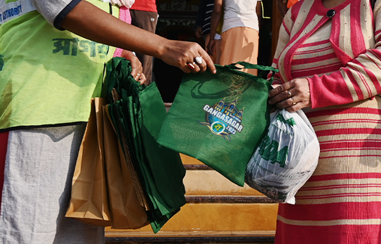
Availability of Eco-Friendly Products
To walk down the path of the divine in pursuit of moksha, one must purify their soul. But, we tend to keep ourselves clean and pollute our surroundings. This would incur nothing but the wrath of the mighty and the destruction of the planet. Thus, the district administration of South 24 Parganas

Parichay
In a large congregation like Gangasagar, senior citizens and minors visit from various parts of the globe. Unfortunately, due to the heavy rush on the mela days, a considerable number of pilgrims get separated from their families. To reunite such pilgrims, QR-based waterproof wristbands have been introduced
We Care for Every Pilgrim
The administration remains committed to providing a safe, clean and comfortable pilgrimage experience at Gangasagar.